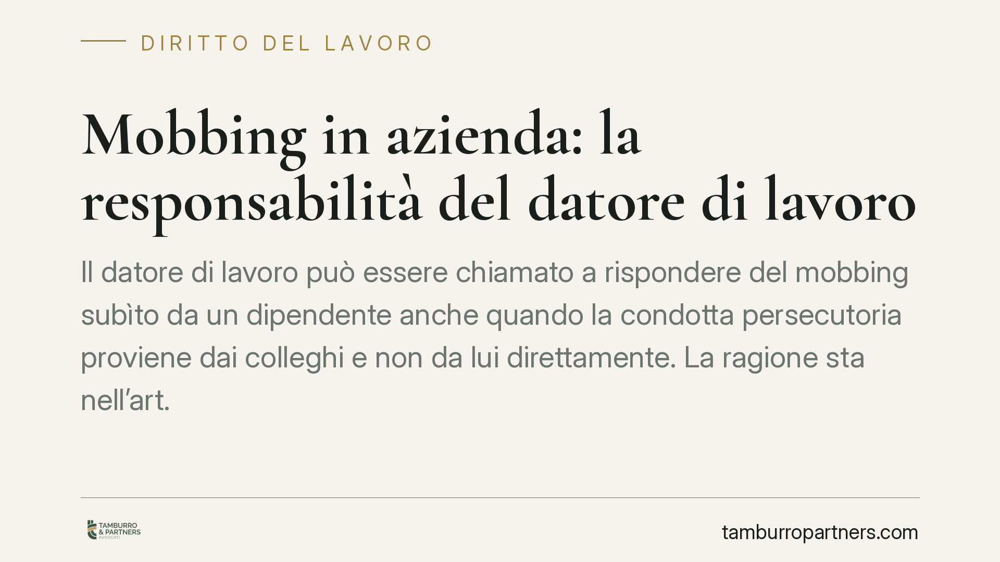

Mobbing in azienda: la responsabilità del datore di lavoro
Il datore di lavoro può essere chiamato a rispondere del mobbing subìto da un dipendente anche quando la condotta persecutoria proviene dai colleghi e non da lui direttamente. La ragione sta nell'art. 2087 del Codice civile, che impone all'impresa un obbligo generale di protezione della persona che lavora. Vediamo cosa comporta, come si distribuisce l'onere della prova e cosa distingue il mobbing dallo straining.

Il fatto
La questione ricorrente è semplice da porre e complessa da risolvere: se un lavoratore subisce comportamenti persecutori da parte dei colleghi, l'azienda ne risponde? La risposta, secondo l'orientamento consolidato della Cassazione Sezione Lavoro, è affermativa a determinate condizioni. Il datore può essere ritenuto responsabile anche quando non ha materialmente diretto o organizzato le condotte vessatorie, purché ne fosse a conoscenza o avrebbe dovuto esserlo e non sia intervenuto.
Si tratta di un principio che si inserisce in una linea giurisprudenziale stabile (tra le altre, Cass. Sez. Lav. n. 3291/2016 e n. 18927/2012), fondata sulla natura dell'obbligo di sicurezza gravante sull'imprenditore.
Inquadramento normativo
Il fondamento è l'art. 2087 c.c., che obbliga l'imprenditore ad adottare «le misure che, secondo la particolarità del lavoro, l'esperienza e la tecnica, sono necessarie a tutelare l'integrità fisica e la personalità morale dei prestatori di lavoro».
È una norma cosiddetta "aperta": non elenca condotte tipizzate, ma pone un obbligo generale di protezione che si adatta ai rischi concreti dell'organizzazione, compreso il rischio di aggressioni relazionali interne. La personalità morale citata dalla norma include la dignità e l'equilibrio psichico del dipendente.
La responsabilità che ne deriva ha natura contrattuale: nasce cioè dall'inadempimento di un obbligo insito nel rapporto di lavoro, non da un illecito extracontrattuale. Ciò incide sul termine di prescrizione (dieci anni) e sulla ripartizione dell'onere della prova.
Cosa significa "mobbing" e cosa lo distingue
Non ogni conflitto sul luogo di lavoro è mobbing. La giurisprudenza richiede due elementi congiunti: la sistematicità delle condotte (una pluralità di atti ripetuti nel tempo, non un episodio isolato) e l'intento vessatorio, cioè la finalità di emarginare o mortificare il lavoratore.
È utile tenere distinte tre figure che spesso vengono confuse:
- Mobbing: pluralità di condotte ostili, sistematiche e sorrette da un disegno persecutorio.
- Straining: forma "attenuata", in cui manca la continuità tipica del mobbing ma resta una condizione lavorativa stressante e discriminante creata volontariamente (ad esempio un demansionamento durevole). La Cassazione lo ha riconosciuto come autonomamente risarcibile.
- Demansionamento: assegnazione a mansioni inferiori in violazione dell'art. 2103 c.c.; può integrare uno degli atti del mobbing o rilevare di per sé.
Il criterio distintivo essenziale resta la presenza o meno del disegno unitario e della reiterazione.
Come si distribuisce l'onere della prova
Qui è necessaria precisione, perché la materia si presta a semplificazioni fuorvianti.
Il lavoratore che agisce deve provare tre elementi: la condotta (i comportamenti lesivi), il danno subìto (ad esempio la patologia psicologica, documentata) e il nesso causale tra i due.
Provati questi elementi, spetta al datore di lavoro dimostrare di aver adottato tutte le misure idonee a prevenire ed evitare il danno, secondo lo standard dell'art. 2087 c.c. L'inversione, quindi, non riguarda l'intera vicenda: opera solo sul profilo dell'adempimento dell'obbligo di protezione. Non è vero, in altre parole, che l'onere ricade in blocco sull'impresa.
Implicazioni pratiche
Per l'azienda il messaggio è chiaro: la tolleranza o l'inerzia di fronte a dinamiche persecutorie note può tradursi in responsabilità risarcitoria, a prescindere da chi materialmente le abbia poste in essere. Serve una vigilanza attiva sull'ambiente relazionale.
Per il lavoratore, la natura contrattuale della responsabilità offre un quadro probatorio meno gravoso rispetto all'illecito comune, ma non elimina l'onere di documentare condotta, danno e nesso.
Cosa fare in concreto
Per il datore di lavoro:
- Adottare procedure interne di segnalazione e gestione dei conflitti, tracciabili.
- Documentare gli interventi assunti a fronte di segnalazioni, per poter dimostrare la diligenza richiesta.
- Formare i responsabili sul riconoscimento delle dinamiche vessatorie.
Per il lavoratore:
- Conservare ordinatamente prove documentali (email, comunicazioni, ordini di servizio) e annotare gli episodi con data.
- Acquisire tempestiva documentazione medica che colleghi il disturbo alle condizioni di lavoro.
Prima di ogni iniziativa giudiziale è opportuna una valutazione tecnica preliminare della vicenda nel suo complesso, poiché la qualificazione tra mobbing, straining e demansionamento incide sulla strategia e sulle prove necessarie.
---
Contributo informativo a cura di Tamburro & Partners Avvocati - Avv. Giuseppe Tamburro. Non costituisce parere legale.
Ogni storia di lavoro ha i suoi tempi.
Se gestisci HR e vuoi un confronto su contenzioso, ispezioni o licenziamenti, scrivi allo studio. Ti rispondiamo entro un giorno lavorativo.